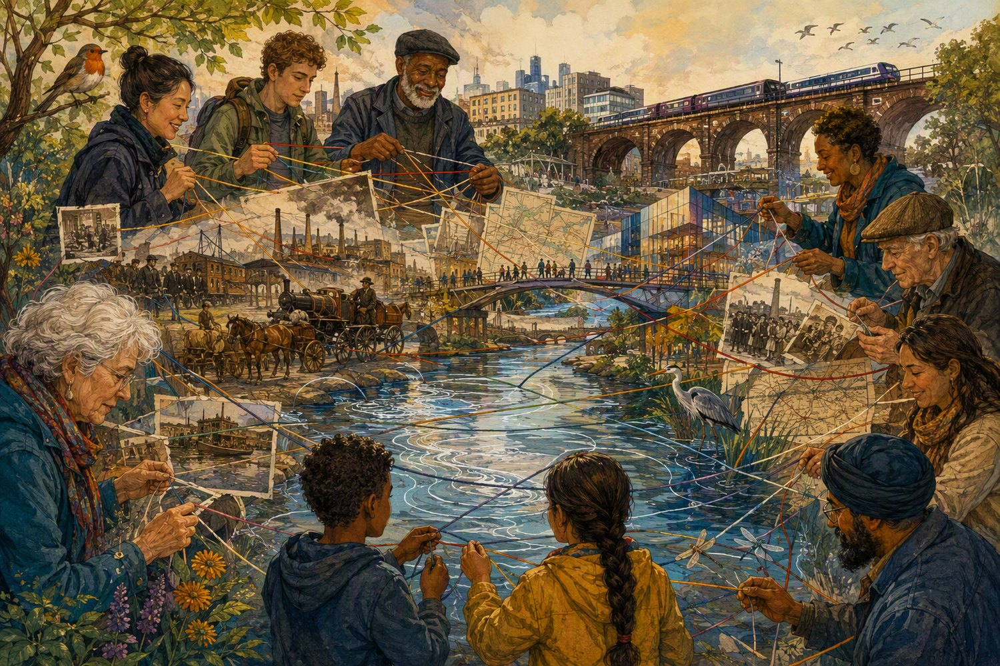

River detective
Find one thing living, one moving, one built and one reflected.
Families, friends and curious minds
Come with children, parents, grandparents, a partner, friend or neighbour. Or book one place and come on your own. Listen, notice, compare and discover the River Irwell together.
Explore the Irwell together
A bridge may prompt one person to think about engineering, another to notice a train and someone else to remember how the riverside used to look. The experience leaves room for those different observations.

Who is it for?
The storytelling is designed to work particularly well for curious children aged 8 and over, teenagers and adults. Younger family members are also welcome with their adults.
You do not need to bring a child. Adults attending with friends, relatives or on their own are equally welcome.
No previous knowledge of Manchester, Salford, history, theatre or music is needed.
Listen, look and talk
Gentle observation prompts can help families start conversations, but nobody will be put on the spot. Join in as much or as little as you wish.
Find one thing living, one moving, one built and one reflected.
Which crossing looks oldest? What clues can each generation spot?
Connect river, canal, railway, warehouse, shop and home.
What family or neighbourhood story should the cities remember?
Follow the Spider's Web
The A4 souvenir map can be used before the walk, brought along on the day or completed afterwards. Add your name, the date and a place, story or moment you want to remember.
Keep it as a record of the experience or use it to retrace the river another day.

Our river, our climate, our future
The Irwell connects industrial history with present-day questions about flooding, wildlife, green space, walking and how two cities live with water.
Look for walls, changes in ground level and places where water might move when the river rises.
Notice plants, birds, river edges and the links between waterways and green spaces.
Imagine safer, greener routes connecting the Irwell with canals, parks, viaducts and neighbourhoods.

Plan with confidence
Schools and community groups
The growing learning collection can support local history, transport, environment, oral history, creativity and conversations about Manchester and Salford.
River observation, maps, wildlife, transport chains and local-history storytelling.
Industrialisation, labour, trade, flooding, pollution, recovery, oral history and evidence.
Memory mapping, belonging, urban change, creative ageing, resilience and environmental justice.
Choose from six experiences on 19, 20 and 21 December 2026 at 10:00 and 13:30.